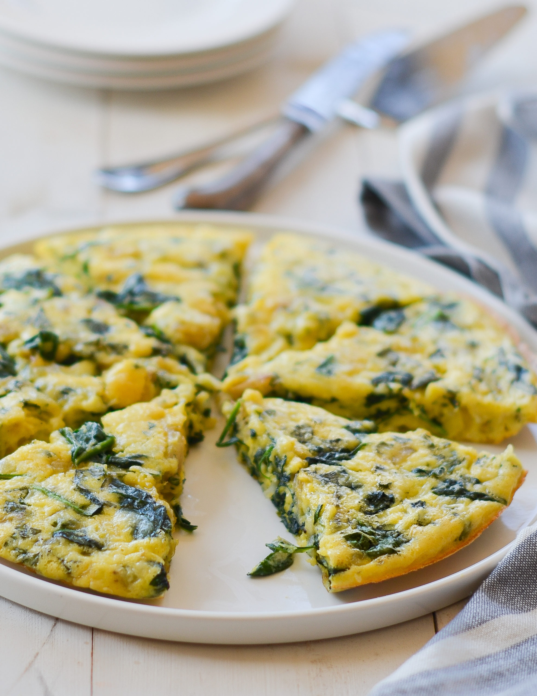

Spinach Frittata

Spinach frittata
This recipe comes from the book How to Cook Everything: the basics by Mark Bittman. This spinach frittata is a simple, cheap,
and relatively healthy breakfast that can be prepared in only 30 minutes.
Ingredients
- 6 eggs
- 1/2 cup fresh grated parmesan cheese
- salt & freshly ground pepper
- 3 tablespoons olive oil
- 1/2 small red onion, chopped
- 1 pound fresh spinach, chopped
Steps
- Position the rack under the broiler about 4 inches from the heat source and turn it to high.
Crack the eggs on a flat, hard surface and open them into a bowl.
Add the cheese, sprinkle with some salt and pepper, and whisk until the yolks and whites are just combined.
- Put the olive oil in a medium oven-proof skillet, preferably nonstick, over medium-high heat.
When it's hot, add the oniom, sprinkle with salt and pepper, and cook until soft, 3 to 5 minutes.
- Add the spinach and cook, stirring and tossing frequently, until the leaves wilt and release their liquid; lower the heat if necessary
to keep everything from burning. Once the spinach starts to dry and stick to the pan, after 3 to 5 minutes, turn the heat to low. Cook,
stirring occasionally, until there is no water left in the pan and the spinach is coated in oil, another minute or so, then
spread out the spinach in the pan.
- Pour the egg mixture over the spinach and onions, evenly distributing the vegetables if necessary. Cook, undisturbed, until the eggs
are firm at the bottom and the top is still runny, 8 to 10 minutes.
- Put the pan under the broiler until the eggs finish setting and brown lightly, 2 to 4 minutes, watching to make sure the frittata doesn't burn.
(Be careful removing the pan from the oven since the handle will be hot.) Cut the frittata into wedges and serve right away,
or warm, or at room temperature.